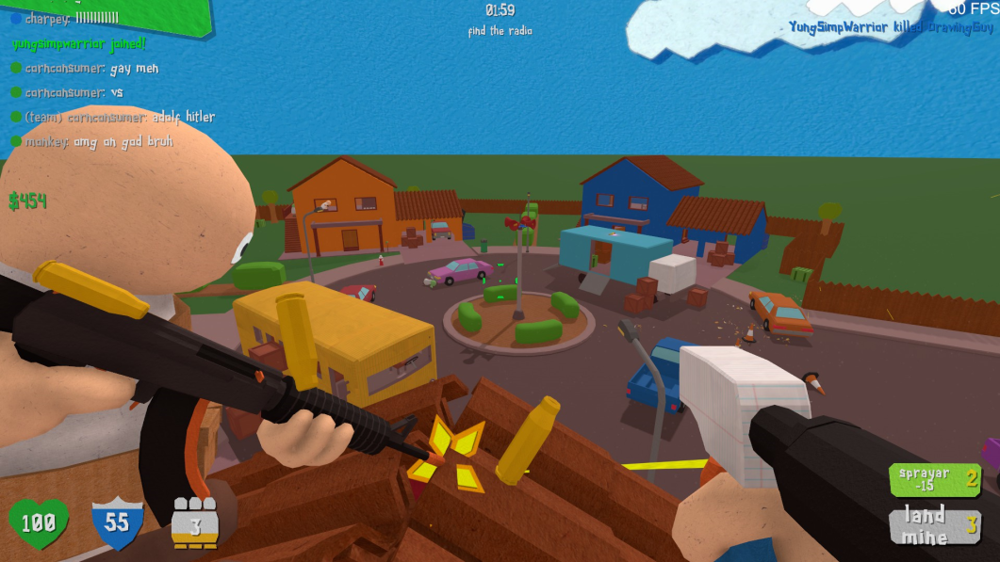
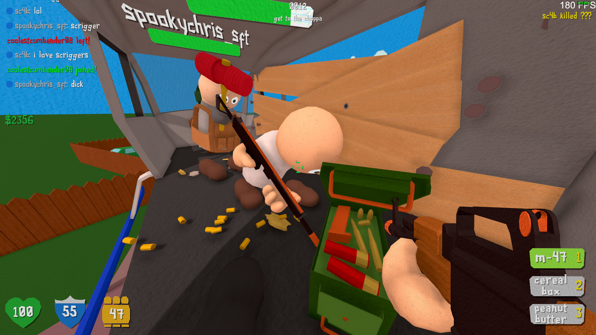
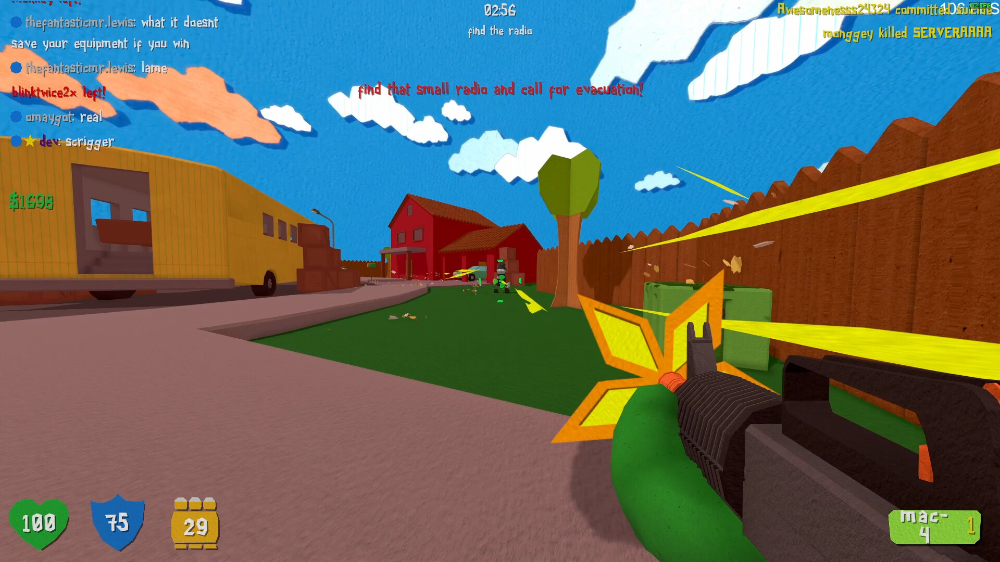
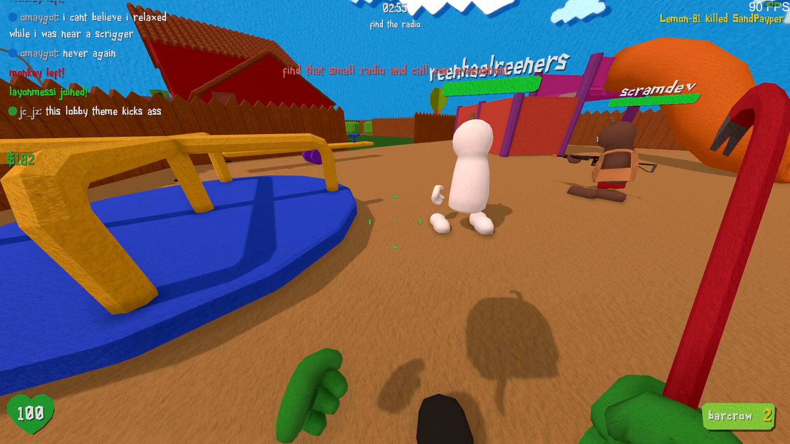
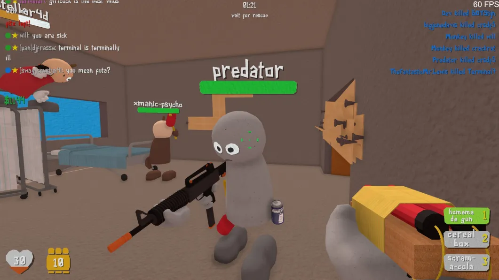
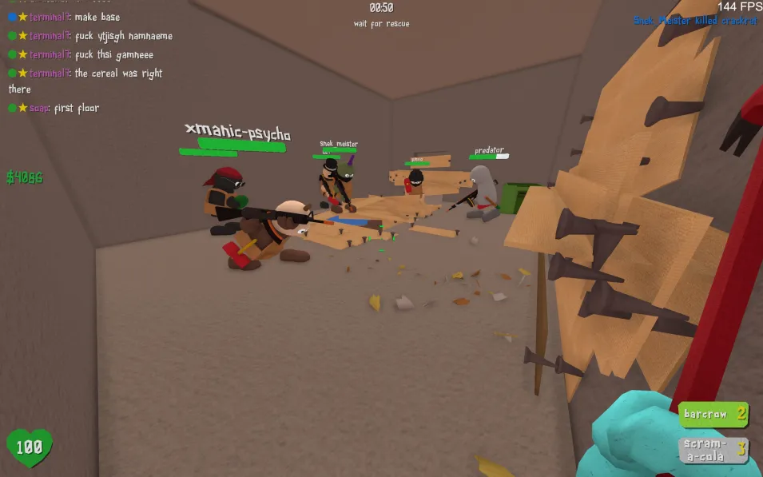
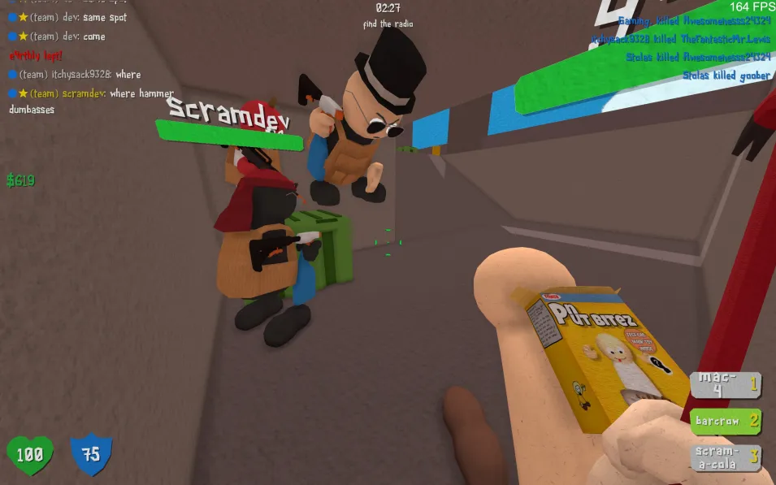
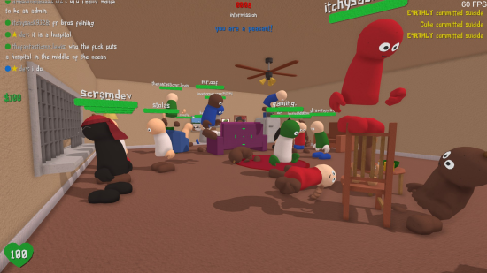
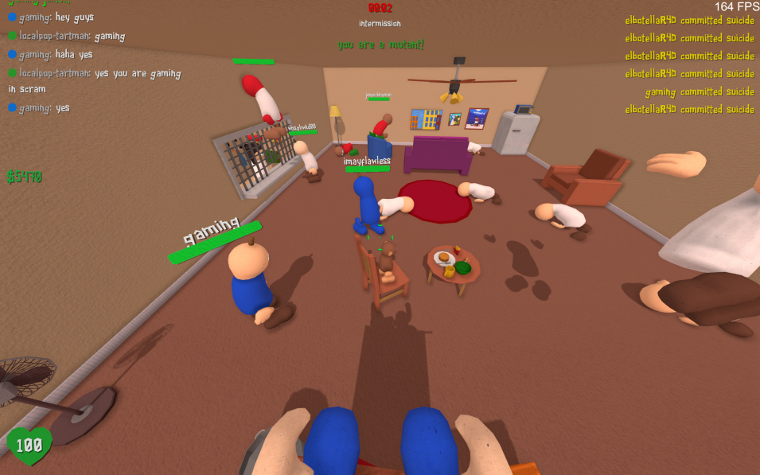
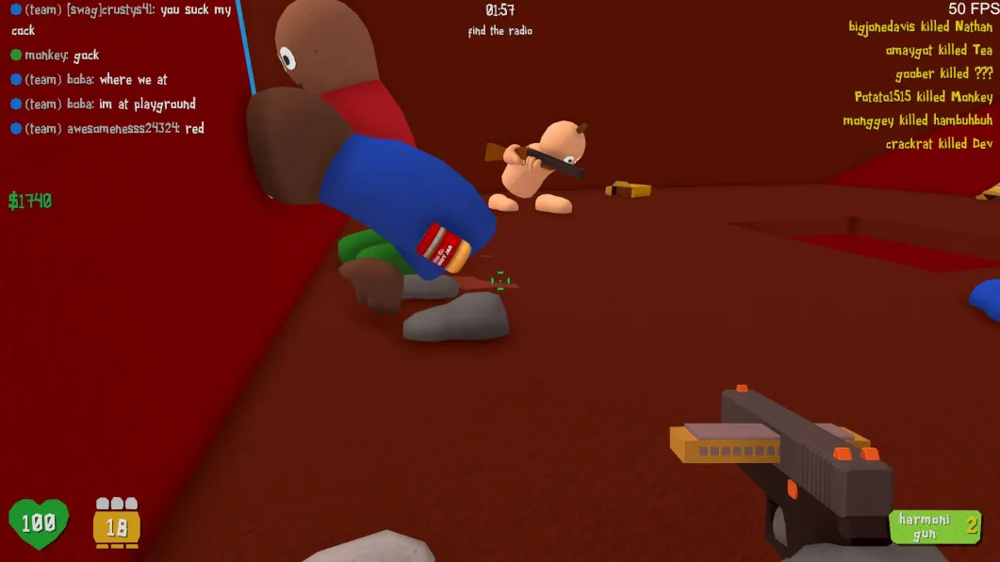
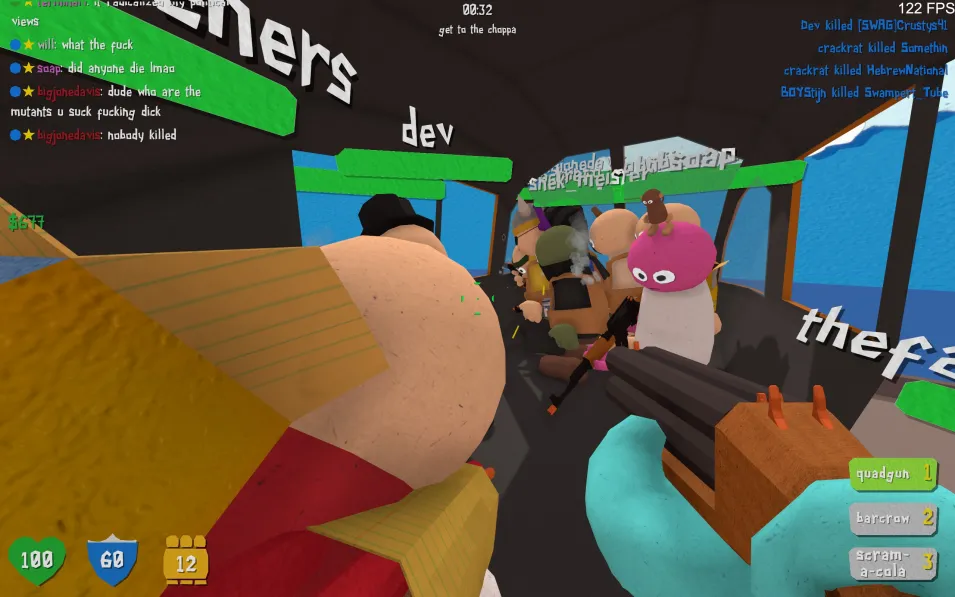
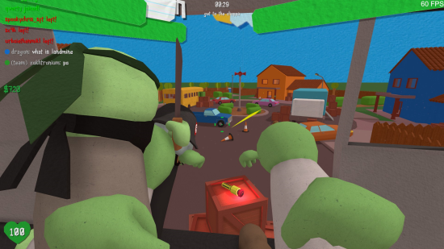
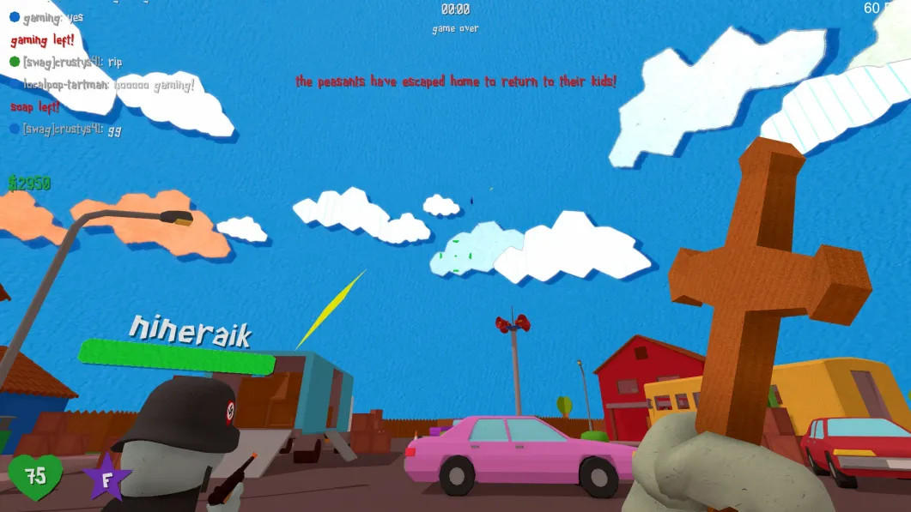
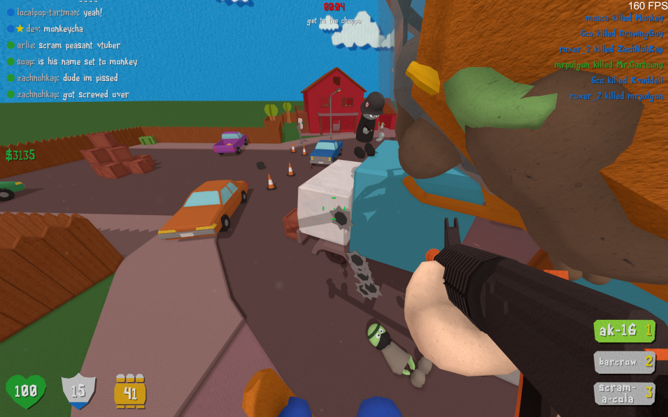
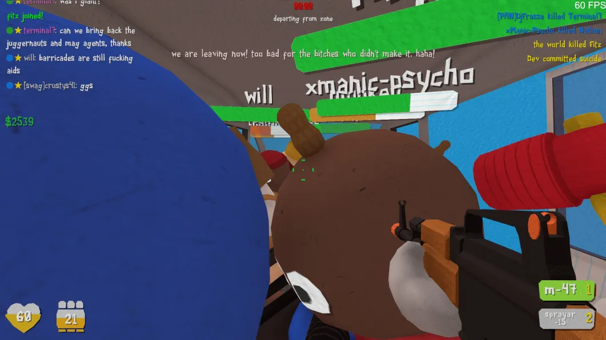
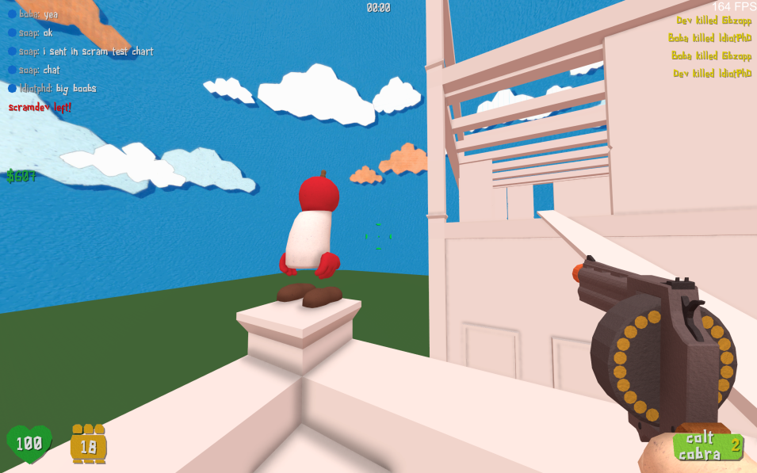
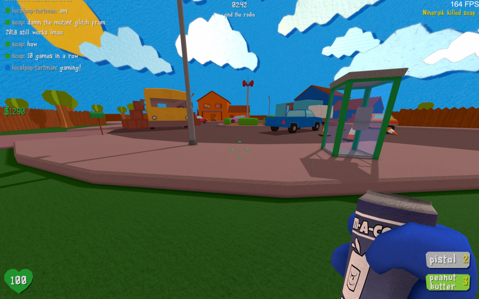
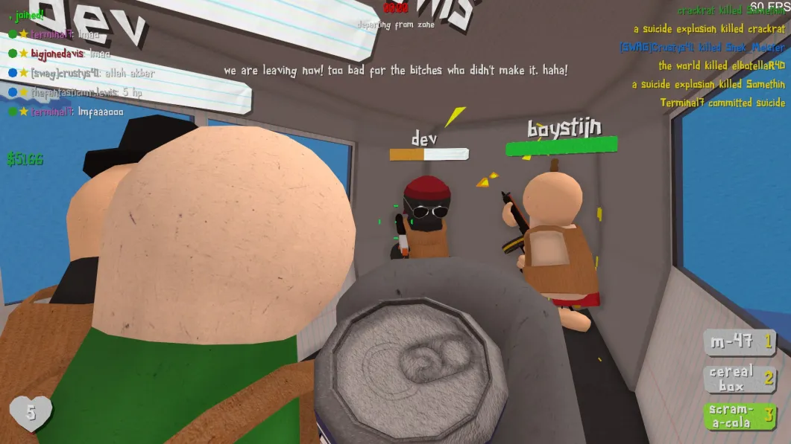
Scram is a silly satire shooter with a paper arts and crafts inspired art style. It is a thrilling and action-packed fast paced multiplayer game with unique game mechanics. As a player, you can choose to fight as a peasant, armed with an array of weapons, against the mutant invaders who are attempting to wipe out the town. Your goal is to eliminate the mutants and stay alive long enough to be rescued and evacuated.
Alternatively, you can play as a mutant and join the hunt for the remaining peasants, trying to stop them from escaping at all costs. The game offers an intense and adrenaline-fueled gameplay that keeps you engaged and challenged from start to finish.
Best of all, Scram is completely free to play, so you can join the community and start battling it out right away. With its large-scale fanbase and constant updates, Scram is the perfect game for anyone looking for an exciting and immersive multiplayer shooter experience.
Unfortunately, the dev team has halted development on Scram 2 due to lack of funds and are currently looking for support to continue the project.